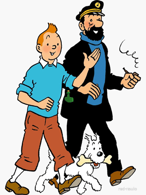
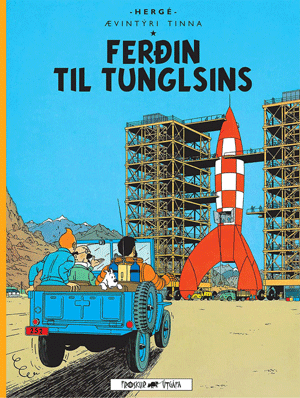

ÆVINTÝRI TINNA
Ævintýri Tinni (franska: Les Aventures de Tintin) er röð myndasagna eftir Hergé. Hergé byrjaði að þróa hugmyndir sínar árið 1929 og myndasagan
varð fljótt mjög vinsæl um allan heim.
Teiknimyndasögurnar segja frá ungum belgískum fréttamanni að nafni Tinni og öllum hættulegum, spennandi og gamansömum æ
vintýrum sem hann lendir í um allan heim. Hann er næstum alltaf í fylgd með hundinum sínum, Tobba, sem og hinum fúna sjóm
anni, Kolbeini Kapteini, fjarverandi hugvitsmanninum, prófessor Vandráði og heimskulegu rannsóknarlögreglumönnunum tveimur, Skafta og Skapta.
Þættirnir eru gerðir um allan heim í báðum alvöru löndum sem og mörgum skálduðum. Tinni býr í Brussel, höfuðborg Belgíu. Meðal raun
verulegra þjóða eru Belgía, Sviss, Bretland, Bandaríkin, Sovétríkin, Kongó, Perú, Indland, Egyptaland, Indónesía, Nepal, Tíbet og Kína
. Aðrir raunverulegir staðir sem koma fram eru Sahara-eyðimörkin, Atlantshafið, Akureyri og tunglið. Með skáldskaparlöndunum má nefna San T
heodoros, São Rico og Nuevo-Rico í Suður-Ameríku, ríki eða stjórnsýslusvæði Gaipajama á Indlandi og Khemed á Arabíuskaga.

TINNI Á ÍSLANDI
Ævintýri Tinna, einnig þekkt sem Tinna bækurnar hér á Íslandi voru gefnar út af Fjölvi og Loftur Guðmundsson þýddi allar bækurnar. Hér eru ýmsar s
taðreyndir um Tinni og tengsl hann við Ísland:
Í Dularfullu stjörnunni komu Tinni og Kolbeinn við á Akureyri til að taka elds
neyti. Var það glæsilegt fyrir Akureyrarbæ. Akureyrastofa kannar nú möguleikann á þv
í að reisa styttu af Tinna og Tobba á Torfunesbryggju á Akureyri, bryggjunni sem að þeir stoppuðu á.
Teiknimyndirnar um Tinna voru talsettar á íslensku og voru það leikarnir Þorsteinn Bach
mann og Felix Bergsson sem gerðu sér lítið fyrir og talsettu alla karakterana í öllum 39 þáttunum sem gerðir voru.
Árið 2018 gerði Gísli Marteinn hlaðvarp fyrir ríkisútvarpið þar sem að hann talar um eina Tinna bók í hverjum þætti ásamt þekktum einstaklingum.

KVIKMYNDIN
Ævintýri Tinna: Leyndardómur Einhyrningsins (e. The Adventures of Tintin: The Secret of the Unicorn) kom út árið 2011
og er byggð á fyrstu þrem tinnabókunum sem voru gefnar út en það eru: Krabbinn með gylltu klærnar, Leyndarmál Einhyrningsins
og Fjársjóður Rögnvalds Rauða. Heimsfrægi leikstjórinn Steven Spielberg leikstýrði myndinni. Vegna vinsældar þessara myndar
stendur en til boða að framleiða framhaldsmynd. Áhorfendur mega búast við framhaldsmynd árið 2024, segir Spielberg.
Aðaleikarar eru
- Andy Serkis sem Kolbeinn kafteinn, Kolbeinn Kjálkabítur
- Simon Pegg og Nick Frost sem Skafti og Skapti
- Daniel Craig sem Sigmundur Sakkarín, Rögnvaldur rauði
Hér má finna sýnishorn fyrir myndina ásamt upphafslagi myndarinnar sem var samið af hinu
stórkostlega tónskáldi John Williams, sem er einnig þekktur fyrir að hafa samið tónlist fyrir m.a. Star Wars, Indiana Jones og Harry Potter!
UM HÖFUNDINN
Ævintýri Tinni (franska: Les Aventures de Tintin) er röð myndasagna eftir Hergé. Hergé byrjaði að þróa hugmyndir sínar árið 1929 og myndasagan
varð fljótt mjög vinsæl um allan heim.
Teiknimyndasögurnar segja frá ungum belgískum fréttamanni að nafni Tinni og öllum hættulegum, spennandi og gamansömum æ
vintýrum sem hann lendir í um allan heim. Hann er næstum alltaf í fylgd með hundinum sínum, Tobba, sem og hinum fúna sjóm
anni, Kolbeini Kapteini, fjarverandi hugvitsmanninum, prófessor Vandráði og heimskulegu rannsóknarlögreglumönnunum tveimur, Skafta og Skapta.
Þættirnir eru gerðir um allan heim í báðum alvöru löndum sem og mörgum skálduðum. Tinni býr í Brussel, höfuðborg Belgíu. Meðal raun
verulegra þjóða eru Belgía, Sviss, Bretland, Bandaríkin, Sovétríkin, Kongó, Perú, Indland, Egyptaland, Indónesía, Nepal, Tíbet og Kína
. Aðrir raunverulegir staðir sem koma fram eru Sahara-eyðimörkin, Atlantshafið, Akureyri og tunglið. Með skáldskaparlöndunum má nefna San T
heodoros, São Rico og Nuevo-Rico í Suður-Ameríku, ríki eða stjórnsýslusvæði Gaipajama á Indlandi og Khemed á Arabíuskaga.
Ævintýri Tinna, einnig þekkt sem Tinna bækurnar hér á Íslandi voru gefnar út af Fjölvi og Loftur Guðmundsson þýddi allar bækurnar. Hér eru ýmsar s
taðreyndir um Tinni og tengsl hann við Ísland:
Í Dularfullu stjörnunni komu Tinni og Kolbeinn við á Akureyri til að taka elds
neyti. Var það glæsilegt fyrir Akureyrarbæ. Akureyrastofa kannar nú möguleikann á þv
í að reisa styttu af Tinna og Tobba á Torfunesbryggju á Akureyri, bryggjunni sem að þeir stoppuðu á.
Teiknimyndirnar um Tinna voru talsettar á íslensku og voru það leikarnir Þorsteinn Bach
mann og Felix Bergsson sem gerðu sér lítið fyrir og talsettu alla karakterana í öllum 39 þáttunum sem gerðir voru.
Árið 2018 gerði Gísli Marteinn hlaðvarp fyrir ríkisútvarpið þar sem að hann talar um eina Tinna bók í hverjum þætti ásamt þekktum einstaklingum.
Ævintýri Tinna: Leyndardómur Einhyrningsins (e. The Adventures of Tintin: The Secret of the Unicorn) kom út árið 2011
og er byggð á fyrstu þrem tinnabókunum sem voru gefnar út en það eru: Krabbinn með gylltu klærnar, Leyndarmál Einhyrningsins
og Fjársjóður Rögnvalds Rauða. Heimsfrægi leikstjórinn Steven Spielberg leikstýrði myndinni. Vegna vinsældar þessara myndar
stendur en til boða að framleiða framhaldsmynd. Áhorfendur mega búast við framhaldsmynd árið 2024, segir Spielberg.
Aðaleikarar eru
- Andy Serkis sem Kolbeinn kafteinn, Kolbeinn Kjálkabítur
- Simon Pegg og Nick Frost sem Skafti og Skapti
- Daniel Craig sem Sigmundur Sakkarín, Rögnvaldur rauði